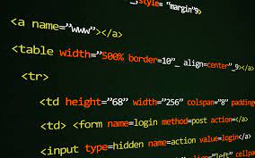

Etiquetas Básicas de HTML
Para la estructura basica se veran las etiquetas necesarias
- Doctype: Es la primer etiqueta utilizada y es con la que se abren los documentos HTML.
- HTML: Esta etiqueta de apertura y cierre estan ubicadas al comienzo y final del documento y dentro de estos estara toda la estructura que se desarrollara.
- Head: Esta etiqueta de apertura y cierre contienen información de cabecera que no es visible en la pagina como lo es el titulo que se ve en la pestaña de la pagina y datos como el idioma de la pagina.
- Title: Esta etiqueta de apertura y cierre contienen el titulo de la pagina que puede ser visualizado en la pestaña de la pagina.
- Meta: Esta etiqueta permite una mefor indexación en los buscadores.
- Body: Esta etiqueta de apertura y cierre contienen las etiquetas que seran visibles en la pagina
- Comentarios: < !-- comentarios -->: Esta etiquera sirve para agregar comentarios que permiten conocer información del codigo y solo es visible directamente en el codigo.
- h1, h2, h3 ... h6: Son distintos niveles de titulos para la jerarquia de la pagina.
- br: Se utiliza para crear un salto de linea.
- p: Se utiliza para crear parrafos.
- ul: Se utiliza para iniciar una lista.
- li: Se utiliza para elementos de la lista
